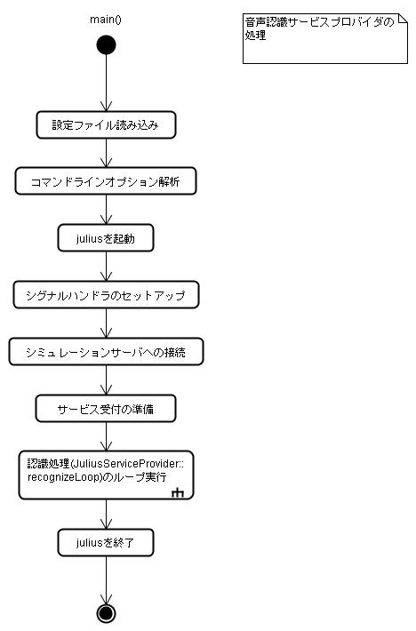
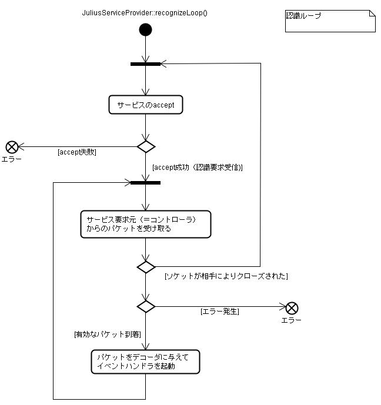
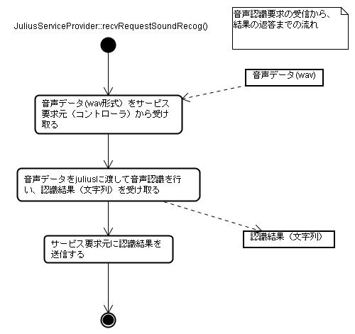

主な処理を流れ図と共に解説する．
以下に音声認識サービスプロバイダの処理の流れを示す．

音声認識サービスプロバイダは起動されるとまず、初期化処理を行う．合わせて設定ファイルの読み込み、コマンドライン引数の解析が行われる．
初期化処理が終了すると、音声認識サービスプロバイダはjuliusを独立プロセスとして立ち上げる．起動に成功したら、juliusとの通信用ポートを2つ(moduleポートおよびadinnetポートを）開く．コマンド、データの送信、認識結果の受信はこのポートを介して行う．
次にシミュレーションサーバーとの接続ポートを開く．これはシミュレーションサーバーに対して、「音声認識サービスを受け付けられる」と通知するためである．さらに、コントローラからのサービス接続要求受け付け用ポートを開く．
以上の準備がすべて完了したら、認識ループに入る．
認識ループ(JuliusServiceProvider::recognizeLoop())では、まずコントローラからのサービス要求があるかを調べる．
サービス要求が来ているなら、コントローラから要求内容のパケットを受け取る．正常に受信が完了し、有効なパケットが届いたと確認されたら、デコーダにパケットの内容を流し込み、イベントハンドラを起動させる．実質的な音声認識処理はこのイベントハンドラで行われる．

認識要求に対するイベントハンドラでは、まず認識対象の音声データをサービス要求元（通常はコントローラ）から受け取る．
受け取った音声データをjuliusに送り、juliusからの認識結果を受け取る．juliusとのデータの送受信は、ソケットを通じて行われる．juliusの返信してくる認識結果はXMLで記述されているため、XMLパーサーを用いてプレーンテキストとして取り出す．
最終的に認識結果の文字列をコントローラに返信して終了する．